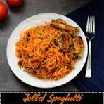

Jollof Spagetti Recipe

Fry the onions and tomato paste while adding in the seasoning with the garlic and ginger.
Let it boil for a while then add the partially cooked spagetti into it and let simmer.
Ingredients
- Spaghetti
- Tomatoes
- onions
- Red Bell Peppers
- Garlic
- Ginger
- Tomoto paste
- Chicken or vegetable broth
- Vegetable oil
- Seasoning
Steps
- Blend tomatoes, bell peppers, onions, garlic, and ginger into a smooth paste.
- Heat oil in a pan and sauté the paste until it thickens and the oil begins to separate.
- Add tomato paste, broth, and seasonings, and cook until the sauce is rich and flavorful.
- Cook the spaghetti separately according to package instructions, then drain.
- Combine the cooked spaghetti with the sauce, ensuring it is well-coated. Add optional proteins or vegetables if desired.
- Simmer for a few minutes to let the flavors meld, then serve hot.